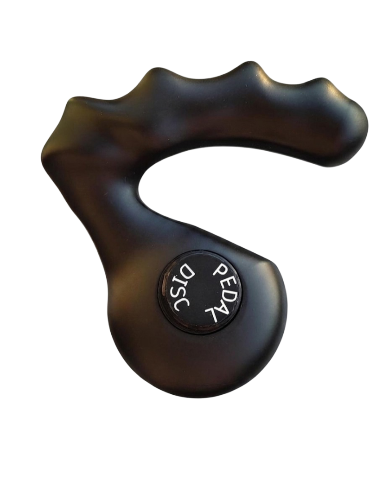
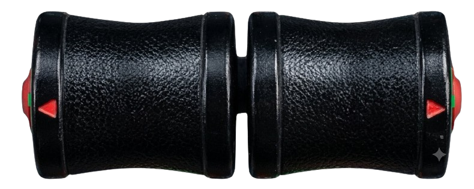

3D Driving & Flight Simulator
Open-world vehicle simulation · Real terrain · Cesium globe
Cesium terrain loading in background…
Only 1st/3rd person applies in 3D Cesium mode.
Internal rendering resolution. Lower = more FPS, blurrier image.
Hides the browser UI for an immersive view. Exits automatically if you press Esc.
Camera viewing angle.
How long the camera waits after you stop dragging before it springs back to center in 3D mode. Drag all the way right for "Never" (camera stays wherever you leave it).
Works fine with no keys (flat ArcGIS satellite imagery). Add a free Cesium Ion token below to unlock real terrain elevation, OSM building footprints, AND free photorealistic 3D tiles.
"Terrain + Airports GP3DT" loads real World Terrain everywhere and only switches to Google's photorealistic 3D tiles inside a radius around whichever airport is nearby — best of both: light everywhere, ultra-detailed right where you land/takeoff.
Paste your own token here to use it instead (e.g. for higher usage limits). Get a free one at ion.cesium.com.
Only applies when Google Photorealistic 3D Tiles is active.
Beyond this altitude/distance, GP3DT tiles stop rendering. In airplane mode, once you climb high enough (just under this threshold) the view switches to World Terrain without OSM Buildings; below it, GP3DT renders normally again.
Car, Bus, and Plane collide with a simple flat ground plane covering a 5 km radius around the centre of the active airport — the same "keep it simple" approach used for the runway lights, with no live terrain sampling and nothing to configure.
Switches the map between North-up and Heading-up (auto-rotating with your vehicle).
Scales the 3D model (car/bus/plane) up or down.
Manually nudges the plane up or down if it looks like it's floating above or sinking into the ground, without changing the altitude reading on the HUD.
Press this if your car, airplane, or bus doesn't load correctly. This resets all saved data and reloads the simulator fresh.
Lat: 0.00000, Lng: 0.00000
ALT: 0 ft


Open-world vehicle simulation · Real terrain · Cesium globe
Cesium terrain loading in background…
📍 Click anywhere on the map to select a spawn location, or search for an airport above.
You can also click an airport marker when Highlight Airports is ON.